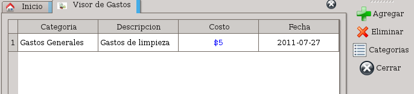
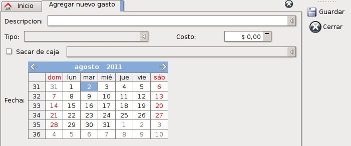
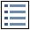
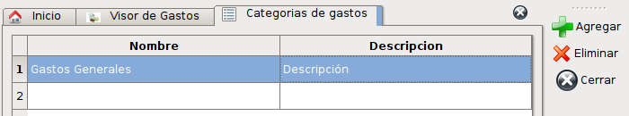

Administración de Gastos
Los gastos son todas las salidas que tendrá, que no se realizan mediante una compra de productos para revender.
Todos los gastos se pueden dividir en categorías. Esto le permitirá generar un orden de ingreso y una separación de cada tipo de gasto al generar los reportes de salida.
Para ingresar se puede apretar el botón de gastos en la ventana principal o mediante el menú Herramientas -> Gastos.
Allí vera una ventana como la siguiente:

En esta lista podrá obtener una vista simple de los últimos gastos ingresados.
Agregar
Al activar esta acción, podrá ver una pantalla como la siguiente donde podrá ingresar los datos correspondientes al gasto que desea registrar.

Aquí podrá ingresar la descripción del gasto, la cual tiene como ayuda la descripción de los últimos gastos ingresados los cuales puede seleccionar desde la lista desplegable o aparecerán cuando empiece a escribir en el campo de ingreso de la descripción.
También elegirá el tipo de gasto, esto le permite catalogar los gastos dentro de las categorías definidas anteriores.
El costo se ingresará en su campo correspondiente y podrá realizar el gasto de modo “Efectivo” si pago con el con dinero de una caja, haciendo click en la casilla de verificación “Sacar de caja” y eligiendo desde la lista desplegable que se habilitará, la caja de la cual realizará la extracción de efectivo para pagar el gasto.
La fecha actual estará seleccionada automáticamente, pero le permitirá navegar mediante las flechas de izquierda y derecha entre los meses y seleccionar el día en que se realizó el gasto.
Luego de ingresar todos los datos mencionados anteriormente, presione “Guardar”.
Si no desea registrar el gasto, presionando “Cerrar”, no se realizará el registro del gasto.
Eliminar
Para eliminar un gasto, selecciónelo de la lista y presione el botón de “Eliminar”.
El sistema intentará eliminar el gasto y si el gasto fue realizado con una salida de caja, esta será revertida para no modificar el saldo.
Si la operación fue exitosa, se mostrará un cuadro indicándolo. Sino, se especificará cual puede llegar a ser el problema.
Categorías de gastos
Las categorías de gastos están pensadas para generar una clasificación de los gastos que se ingresan al sistema. Puede ingresar tantas categorías como desee.
Para ver la lista de categorías que se encuentra activa, deberá ingresar al listado de gastos y utilizar la opción “Categorías”. Esta le abrirá una pestaña con el siguiente contenido:

Cada categoría contendrá dos propiedades:
- Nombre: Nombre de la categoría que aparecerá en todos los lugares y listas desplegables.
- Descripción: Descripción de la categoría para ampliar el concepto ingresado en el nombre.
Dentro de las acciones que puede realizar están las siguientes:
Agregar
Esta acción habilitará una nueva fila al final del listado que le permitirá ingresar tanto el nombre como la descripción haciendo doble click sobre la celda que desea editar o posicionándose sobre ella con el teclado y presionando la tecla F2. Cuando termine de ingresar los nuevos datos, presione Enter para confirmar y guardar los cambios.
Modificar
Para modificar los datos de una categoría haga doble click sobre la celda que desea editar o posiciónese sobre ella con el teclado y presione la tecla F2.
Para confirmar las modificaciones realizadas, presione la tecla Enter. Esto le permitirá guardar los cambios que realice.
Eliminar
Para eliminar una categoría de gastos posicionesé sobre la categoría que desea eliminar y presione el botón “Eliminar”.
El sistema verificará que no existan gastos declarados que correspondan a esta categoría y si existe alguno, no le permitirá eliminar la categoría. En próximas versiones, podrá mudar estos gastos a otra categoría y eliminarla.